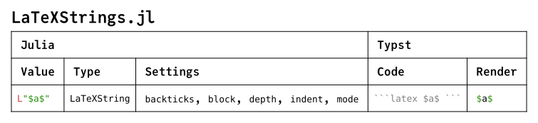
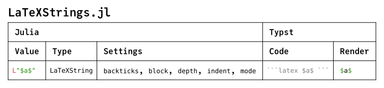

Getting Started
Basics
Strings
Print Julia values in Typst format using show with the text/typst MIME type.
julia> show(stdout, "text/typst", Typst(π))
πSome methods use an IOContext to configure the formatting.
julia> show(IOContext(stdout, :mode => code), "text/typst", Typst(π))
3.141592653589793Instead of printing, create a TypstString using its constructor or @typst_str with formatted interpolation.
julia> TypstString(π)
typst"π"
julia> TypstString(π; mode = code)
typst"3.141592653589793"
julia> typst"$ \(pi) approx \(pi; mode = code) $"
typst"$ π approx 3.141592653589793 $"Commands
Use render to easily generate a Typst source file and compile it into a document.
julia> render(Any[true 1; 1.2 1 // 2]);Compile source files by running a TypstCommand created using its constructor or @typst_cmd.
julia> TypstCommand(["help"])
typst`help`
julia> run(typst`compile input.typ output.pdf`);Examples
These Typst documents were generated from Julia using show with the text/typst MIME type and compiled using a TypstCommand. Each row corresponds to a method of show_typst. Sequential documents correspond to package Extensions.

 
